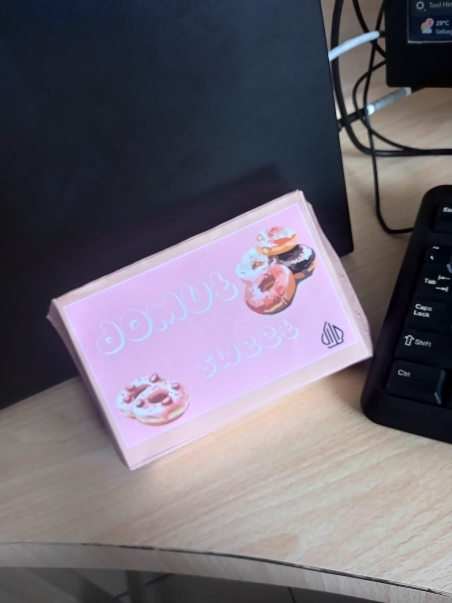
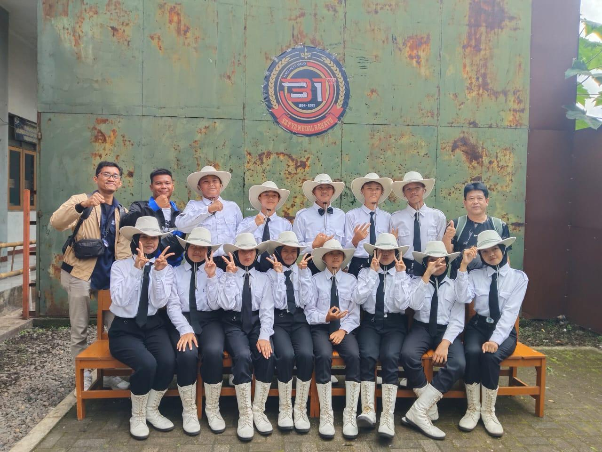

Pengalaman Saya

Kemasan Produk Donat
Ini adalah hasil desain kemasan produk donat yang pernah saya buat. Dalam proses pembuatannya, saya belajar menyesuaikan warna, gambar, dan tampilan kemasan agar terlihat lebih menarik dan rapi. Menurut saya, membuat desain kemasan cukup menantang karena harus kreatif dalam mengatur konsep dan tampilannya, tetapi pengalaman tersebut sangat seru dan menambah pengetahuan saya tentang desain produk.

Pengalaman Mendaki Gunung Tampomas
Saya pernah mendaki Gunung Tampomas sebanyak tiga kali bersama teman-teman SMP. Pengalaman tersebut menjadi salah satu momen yang sangat berkesan karena kami dapat menikmati perjalanan, pemandangan alam, serta kebersamaan selama pendakian. Selain menyenangkan, kegiatan ini juga mengajarkan kerja sama, semangat, dan rasa saling membantu satu sama lain.

Lomba Paskibra
Waktu masih SMP, saya pernah ikut lomba paskibra di GOR Tajimalela bersama teman-teman satu tim. Walaupun latihannya cukup melelahkan, kami tetap semangat dan saling mendukung satu sama lain. Alhamdulillah, tim kami mendapat juara Harapan 3 dan Perintis 11. Pengalaman itu jadi salah satu kenangan seru dan berkesan buat saya karena bisa belajar disiplin dan kerja sama bersama teman-teman.